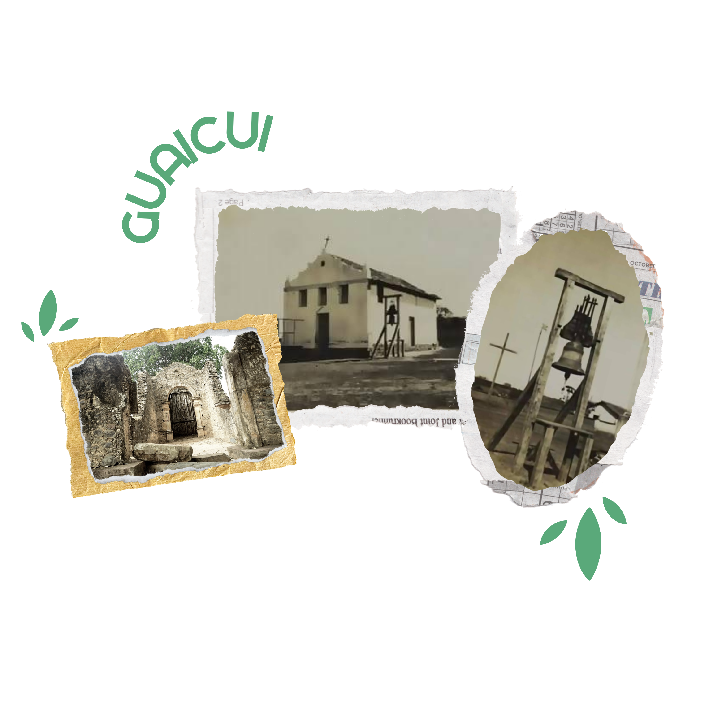
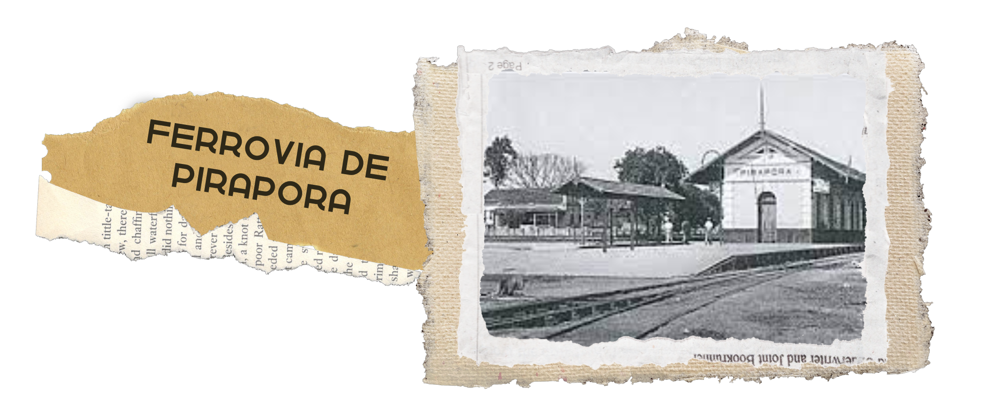

1650 A 1700 - PRIMEIROS A CHEGAR
Conforme o historiador Moisés Vieira (1982) nos explica, a história de Guaicuí começa com os jesuítas em 1650 e depois pelos bandeirantes liderados por Fernão Dias e Manoel Borba Gato em 1679. Além dos dois, a história do povoado possui outro nome em sua biografia, Manuel Nunes Viana, um comerciante que veio a região e trouxe consigo padres, comitivas e armamentos a partir do ano de 1703 e exerceu bastante influência entre os moradores, chegando a proibi-los de pagar impostos a outros se não ele (MORAES,2007).
1635 OU 1775 - A IGREJA DE PEDRAS

Um dos principais pontos turísticos do distrito de Guaicuí é a sua famosa Igreja de Pedras, tombada pelo IEPHA em 1985, é um monumento histórico formado pelas ruínas de uma Igreja inacabada pelos jesuítas no século XVII.
Sua construção, cuja a tradição e alguns documentos nos contam, foi erguida por meio de mão escrava quando os jesuítas chegaram ao local no século XVII e foi abandonada sem sua conclusão no século XVIII, devido às constantes enchentes seguidas de períodos de febre que fizeram com que a população interrompesse a obra da igreja e se povoasse em lugares mais afastados do rio (BORGES, 2012). Na fachada encontramos registro de que a Igreja teve início em 1635, no entanto, muitas vezes é datada como sendo do ano de 1775 (IPHAN, 2010).
1861 - GUAICUÍ, A CAPITAL DA REGIÃO
O povoado que na época recebia o nome de Arraial da Manga, tinha cerca de 3000 almas e seu porto chamado Guaicui na Beira do Rio das Velhas com o Rio São Francisco, recebeu a denominação de “Arraial de Nossa Senhora do Bom Sucesso e Almas do Rio das Velhas”, que foi elevado a vila e sede pela lei provincial nº: 1.112 de 16 de junho de 1861.
Ao que tudo indica, o povoado que viria a se tornar Guaicuí foi pioneiro na região chamada de São Gonçalo da Tabocas que abrangia todos os municípios e distritos que conhecemos como Lassance e Pirapora. Todas as aldeias estavam regidas pela mesma lei provincial no século XVII, e até a criação da capitania das Minas Gerais em 1720, a área pertencia a Guaicuí.
1894- A FERROVIA QUE NÃO VEIO
Ao contrário do que se imagina, Guaicuí era até o século 20, o lugar mais viável economicamente da região para a instalação da ferrovia que estava por vir na região.
No entanto, mesmo Guaicui funcionando como entreposto comercial das mercadorias que vinham do Norte em direção ao centro de Minas e ao porto do Rio de Janeiro, o fato de ser infestada de febres e propricia as enchentes fez com que a Companhia Cedro Cachoeira achasse mais vivael consolidar-se em Pirapora no ano de 1887.